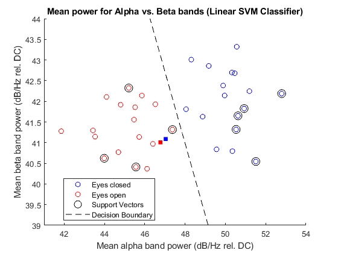

Contents
clear; close all; clc
Declare audio and experiment parameters
audio_length = 180;
Fs = 10e3;
Tint = 5;
num_samples = audio_length * Fs;
signal = audioread("05_08_2021.wav", [1 num_samples]);
Getting reference DC component from FFT
Fsig = fft(signal) / length(signal);
aFsig = abs(Fsig);
p_spectrum = aFsig.^2;
p_spectrum = p_spectrum(1:floor(length(Fsig)/2));
p_spectrum(2:end) = 2*p_spectrum(2:end);
pow_ref = p_spectrum(1);
Compute alpha and beta bandpower for each of the 36 trials
num_trials = audio_length/Tint;
trial_length = length(signal)/num_trials;
pow_a = zeros(num_trials, 1);
pow_b = zeros(num_trials, 1);
for n=1:num_trials
nstart = (n-1)*trial_length+1;
nstop = n*trial_length;
trial_data = signal(nstart:nstop);
[pow_a(n), pow_b(n)] = trialBandpower(trial_data, pow_ref);
end
Find cross-validated accuracy
states = ["Eyes closed", "Eyes open"];
groups = repmat(states, 1, num_trials/length(states))';
num_held = 2;
num_folds = num_trials / num_held;
correct = zeros(num_folds, 1);
start_idx = (num_trials - num_held + 1):-num_held:1;
features = [pow_a pow_b];
for k = 1:num_folds
held_out = start_idx(k):start_idx(k)+num_held-1;
held_in=[1:(start_idx(k)-1) start_idx(k)+num_held:num_trials];
SVM_Mdl = fitcsvm(features(held_in,:),groups(held_in),'Standardize',1);
class = predict(SVM_Mdl, features(held_out, :));
actual_states = groups(held_out);
correct(k) = sum(actual_states==class);
end
total_correct = sum(correct)
DA = total_correct/num_trials * 100
total_correct =
35
DA =
97.2222
Plotting bandpower for held-in and held-out trials
figure
hold on
fold_num = 17;
held_out = start_idx(fold_num):start_idx(fold_num)+num_held-1;
held_in=[1:(start_idx(fold_num)-1) start_idx(fold_num)+num_held:num_trials];
gscatter(pow_a(held_out), pow_b(held_out), groups(held_out), 'br')
gscatter(pow_a(held_in), pow_b(held_in), groups(held_in), 'br', 'o')
plot(pow_a(SVM_Mdl.IsSupportVector), pow_b(SVM_Mdl.IsSupportVector),...
'ko', 'MarkerSize', 10)
xlabel('Mean alpha band power (dB/Hz rel. DC)')
ylabel('Mean beta band power (dB/Hz rel. DC)')
title("Mean power for Alpha vs. Beta bands (Linear SVM Classifier)");
ax_range = round([min(pow_a) max(pow_a) min(pow_b) max(pow_b)]);
ax_range([1 3]) = ax_range([1 3]) - 1;
ax_range([2 4]) = ax_range([2 4]) + 1;
axis(ax_range)
d = 0.02;
[powa_grid, powb_grid] = meshgrid(ax_range(1):d:ax_range(2), ...
ax_range(3):d:ax_range(4));
feature_grid = [powa_grid(:), powb_grid(:)];
[~, scores] = predict(SVM_Mdl, feature_grid);
scores = reshape(scores(:,2),size(powa_grid));
contour(powa_grid, powb_grid, scores, [0 0], 'k--')
L = legend;
L.String{3} = 'Support Vectors';
L.String{4} = 'Decision Boundary';
